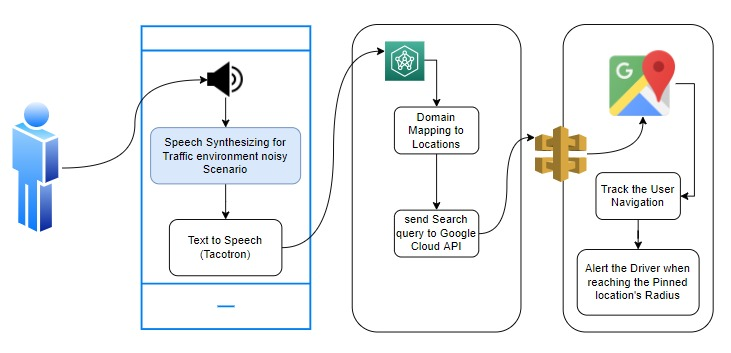

Literature Survey
According to a survey report, remembering what work to accomplish at what place is a highly difficult job for everyone nowadays because there are so many activities that everyone needs to perform in their day-to-day lives. People set tasks or reminders on their smartphones in order to remember themselves. Popular reminders, on the other hand, are based on electronic calendars in mobile phones. Those reminders depend on time, and provide notification just at that time. Rather than triggering and alarm notifying when the user approaches or arrives at that specified place. And nowadays, Android Devices are widely available, and it gives Google Maps and Google Location based services to smart devices, allowing us to quickly obtain location information. However, Google does not provide the option to add task reminders to particular locations. We presented a novel idea with GPS and Location and intend to create the system named "Mapping & Triggering" - System Leveraging Android Device by using their Map services. Our proposed system is highly important in the user's everyday life since it allows the user to create task reminders at several places, giving him an idea and alerting him about chores he has to do at a specific location. Furthermore, the user may access the application through voice, and the device will follow the movement (GPS) of the car and notify the user using alarming system when arrives at the pinned location. In the voice assistant used in the existing systems, noticed for so many drawbacks. Mainly, the accuracy level of voice recognition and text to speech conversion accuracies which are depends on distance of the person to the mic and the background noises are relatively low. WaveNet [4] is an effective audio generating model. It performs well for Text-to-speech (TTS) but is sluggish owing to the sample-level autoregressive nature of the algorithm. It also requires linguistic feature conditioning from an existing TTS frontend; thus, it is not end-to-end: it simply replaces the vocoder and acoustic model. Tacotron,known for sequence-to-sequence architecture to generating magnitude spectrograms from a series of letters, streamlines the typical speech synthesis pipeline by replacing the generation of these linguistic and acoustic characteristics with a single neural network trained only on data. Tacotron employs the Griffin-Lim algorithm for phase estimation, followed by an inverse short-time Fourier transform, to vocode the resultant magnitude spectrograms. As the authors point out, this was only a placeholder for future neural vocoder methods, as Griffin-Lim generates distinct artifacts and worse audio quality than systems such as WaveNet. DeepVoice is another recently created neural model that replaces every component in a conventional TTS pipeline with a comparable neural network. However, each component is taught individually, and changing the system to train in an end-to-end way is not easy. In our Proposed application, the Voice assistant’s Voice synthesis accuracy is gathered by designing a similar model like Tacotron, used by Google and using the same adapting optimizer when compiling the model. their voice assistants and the text to speech converting accuracy is improvised with novel data sets created own with environmental noises. So, the Performance of the system will be increased than the previous researches.
Research Gap
Numerous studies have been conducted on this subject, and certain devices/applications are presently on the market. Furthermore, each of those apps have shortcomings and have been designed to be physically approachable using a typical notification system that is unrelated to the Destination triggering mechanism. The primary goal of this proposed system is to aid drivers in being smart by providing them with an artificial intelligence voice assistant. The whole device/application will be accessed using the user's voice and will assist the user in remembering locations during riding. We rigorously intended to do a comprehensive study on similar systems or apps that were employed in the present market before beginning to execute system features. Developing the new application with identical functionality will result in time wasted while deploying the program. It is quite beneficial to reduce effort by assessing the applications that are already available on the market. Drivers can use an artificially intelligent voice assistance. Accessing maps via voice, searching and pinning destinations via voice, pinning multiple destinations via voice, user can modify the pinned points via voice, suggesting the same name destinations when searching, user can fix the alerting distance range, user gets voice notification alert automatically when he/she reached pinned destinations are the features that are not available in the major existing projects and can be added as drawbacks. Furthermore, the accuracy of voice recognition is really poor in past attempts. Some of the functionalities are already accessible in some current projects, however they are experiencing performance difficulties. These characteristics have generated a gap in the research, which has opened up a research area for us to develop a novel application utilizing deep learning, machine learning, artificial intelligence and convolutional neural networks. Regardless of the fact that neural-based text-to-speech (TTS) models may generate realistic, comprehensible language, they frequently require high-quality voice recordings. Throughout many cases, just the target speaker's loud speech is provided, making TTS model training for this speaker is challenging. Most existing applications have often handled the problem using two distinct techniques: training the TTS model using denoised speech and training with noisy speech using a single noise embedding as input. These cannot used in general, handle speech with real-world complicated noise, particularly those with substantial temporal variations. Applications can exhibit a TTS system capable of synthesizing speech for a speaker using noisy voice data. But the researchers mostly handle real-world loud speech by modeling fine-grained frame-level noise with a noise constraint module that is trained alongside the TTS model. For a real-world instance, most of the Text to speech synthesis are neglect the background noises in the audio inputs but the applications should be able to synthesize the speech input with background noises is the best practices for my knowledge, which is always be helpful to get in to the real-world experience.
Methodology
According to the assumption from the literature review, selection of technology and software solutions are the furthermost vital part of this research. Pinning the location and alerting the user are the main components in this proposed system. users are able to pin their destinations while they are driving through voice. Device will analyze the locations and tracked with the system. Once the user reaching the destination within a certain radius, alert the user about the task that they have to be completed in that specific location. The implementation of text to speech conversion and pinning the location in the maps as well as component overview is shown in Figure 3. Current implementation includes the development of a novel speech synthesis model that is built upon TensorFlow, the novelty of the implementation is emphasized via the creation and usage of a novel data set that has been recorded in a Noisy environment consisting of vehicles horn and noises, while speaking the speech commands. This would prevent the false positives and false negatives in terms of prediction and increase the accuracy. Deep convolutional 1D neural networks using TensorFlow with Total params:1,614,078. Trainable params: 1,614,078, non-trainable params: 0, was used to build the neural network of the model in Google Collab environment. fastFourierTransform and ShortTimefourierTransform was used to visualize and augment the data before the feature extraction phase, Melspectrograms were generated accordingly, however according to the research hypothesis the background noises were included within the training datasets such that the accuracy loss in the filtering process will not be neglected. As shown in the Figure 3, a location-based Android application is developed by us which allows the user to remember the tasks that he needs to complete in different locations. The location-based reminder may be further clarified in that the user can store multiple destinations on the map using voice and the text which reminds the user of the job to be completed. The user can also choose the radius within which he or she wants to be notified. When a user saves a location and enters within a certain radius of the saved location, he or she will receive a notification or an alert displaying the saved information of the job to be completed. The proposed solution would use Google Maps API for maps and GPS to determine the user's present position.

Research Problem
A driver's day-to-day existence is burdened with a slew of issues. Accidents, forgetting where you've been heading, incurring fines for not obeying road signs, finding free parking spots is difficult, and accidents due to sleepiness are just a few instances. Remembering is amongst the most prevalent difficulties that individuals face across the world. It is usually difficult to recall all of the tasks/information when driving. In this study, we are primarily interested in drivers of four-wheel vehicles. Typically, majority people remember certain locations while driving and are frustrated when they get home because of the missed destination tasks. While researching this topic, we discovered several fascinating research issues that drivers confront.
-
• Problems Forgetting some locations/destinations when driving
-
• It is difficult to operate a mobile phone to check directions while driving.
-
• It is difficult to pinpoint areas while driving by hand as well as manually.
-
• Accidents or fatalities may occur while driving while using a cell phone.
-
• Inability to search and pin numerous locations on the maps using voice indefinitely.
-
• Reminder works as a standard alert system, not as a voice alert.
-
• The user's voice recognition accuracy/percentage is low.
-
• The accuracy level/percentage of Speech to text conversion is low.
-
• Unfortunately, the time required to convert voice to text and text to voice is lengthy.
Speech synthesis, often known as TTS, is the process of converting any written information into standard and smooth speech in real time. Many fields are involved, including acoustics, languages, digital signal processing, computer programming, and so on. It's a cutting-edge technique in the domain of information processing, particularly for today's intelligent voice interaction systems. The research objective of voice synthesis has shifted from intelligibility and clarity to naturalness and expressiveness as digital signal processing capabilities have advanced. The clarity of the synthetic speech is described by intelligence, while naturalness relates to ease of hearing and overall stylistic coherence. The benefits and drawbacks of various speech synthesis methods, such as the hidden Markov model (HMM), the restrictive Boltzmann machine (RBM), the deep belief network (DBN), the deep mixture density network (DMDN), the deep bidirectional long short-term memory (DBLSTM), WaveNet, Tacotron, and the convolutional neural network (CNN) are listed.